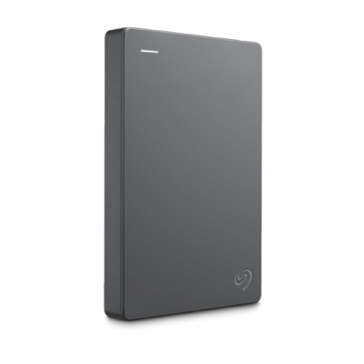

Dating right back to the advent of the personal computer, all systems have come eqquipped with some form of secondary storage. Typically storage sizes or file sizes are measured in kilobytes (KB), megabytes (MB), gigabytes (GB) and terabytes (TB).
| Storage Size | Number of bytes | Number of bytes as power of 10 |
| 1 KB | 1000 bytes | 10^3 bytes |
| 1 MB | 1,000,000 bytes | 10^6 bytes |
| 1 GB | 1,000,000,000 bytes | 10^9 bytes |
| 1 TB | 1,000,000,000,000 bytes | 10^12 bytes |
3.3.1 Magnetic Storage Media
Magnetic storage media and devices store data in the form of tiny magnetised dots.
These dots are created, read and erased using magnetic fields created by very tiny electromagnets.
In the case of magnetic tape the dots are arranged along the length of a long plastic strip which
has been coated with a magnetisable layer (audio and video tapes use a similar technology).
In the case of magnetic discs (e.g. floppy disc or hard-drive), the dots are arranged in circles on
the surface of a plastic, metal or glass disc that has a magnetisable coating.
Hard-drives have a very large storage capacity (up to 1TB). They can be used to store vast amounts of data. Hard-drives are random access devices and can be used to store all types of films, including huge files such as movies. Data access speeds are very fast. Data is stored inside a hard-drive on rotating metal or glass discs (called ‘platters’).
Uses
Advantages
Disadvantages
A Portable hard-drive is one that is placed into a small case along with some electronics that allow the hard-drive to be accessed using a USB or similar connection. Portable hard-drives allow very large amounts of data to be transported from computer to computer.Many portable music players (such as the iPod classic) hard-drives. These miniature devices are just not much bigger than a stamp, but can still store over 100MB of data!
Uses
Advantages
Disadvantages
Magnetic tape is a large capacity, serial access medium. Because it is a serial access medium, accessing individual files on a tape is slow. Tapes are used where large amounts of data need to be stored, but where quick access to individual files is not required. A typical use is for data back-up (lots of data, but rarely only accessed in an emergency). Tapes are also used and in some batch-processing applications (e.g. to hold the list of data that will be processed).
Uses
Advantages
Disadvantages
Magnetic Tapes
Portable Hard Drive
3.3.2 Optical Storage Media
Optical storage devices save data as patterns of dots that can be read using light. A laser beam is the usual light source.
The data on the storage medium is read by bouncing the laser beam off the surface of the medium. If the beam hits a dot it
is reflected back differently to how it would be if there were no dot. This difference can be detected, so the data can be read.
Dots can be created using the laser beam (for media that is writable such as CD-Rs). The beam is used in a high-power mode to
actually mark the surface of the medium, making a dot. This process is known as ‘burning’ data onto a disc.
CD-ROM & DVD-ROM
Compact Disc - Read-Only Memory (CD-ROM) discs can hold around 800MB of data. The data cannot be altered (non-volatile),
so cannot be accidently deleted. CD-ROMs are random-access devices. CD-ROMs are used to distribute all sorts of data:
software (e.g. office applications or games), music, electronic books (e.g. an encyclopaedia with sound and video.)
Digital Versatile Disc - Read-Only Memory (DVD-ROM) discs can hold around 4.7GB of data (a dual-layer DVD can hold twice that).
DVD-ROMs are random-access devices. DVD-ROMs are used in the same way as CD-ROMs (see above) but, since they can hold more data,
they are also used to store high-quality video.
Advantages
- They hold more data than floppy disks (one CD/DVD can replace many floppy disks)
- They are less expensice than hard drive disk systems
Disadvantages
- The data transfer rate/data access time is slower than for hard disks
CD-RW & DVD-RW
CD-ReWritable (CD-RW) and DVD-ReWritable (DVD-RW) discs, unlike CD-Rs and DVD-Rs, can have data burnt onto them and also erased so that the discs can be re-used. They are used in CCTV systems and to record television programmes which can be recorded over time and over again. It is not as wasteful as R format as more files/data can be added to at a later state
Advantages
- Can be over written many times
- Can use different file formats each time it is used
Disadvantages
- Can be expensive
- It is possible to accidentally overwrite data

DVD-RAM
DVD-Random Access Memory (DVD-RAM) discs are a type of re-writable DVD. They often come in a floppy-disc style case (to protect the disc). DVD-RAM discs have a similar capacity to a normal DVD, holding 4.7GB of data. DVD-RAM discs are random-access devices. DVD-RAM discs are used in many camcorders (video recording cameras). The discs are much higher quality than normal DVD-RWs and can reliably store data for up to 30 years. This means that they are often used for video and data back-up and archiving.
Advantages
- They have a long life (estimated 20 years minimum life)
- It is possible to do a rewrite operation over 100,000 times
- Writing on DVD-RAMs is very reliable - they have in-built verification software so the
accuracy of the data is ensured.
- Very fast access if the files are fairly small
- No need to finalise the disk
- Very large capacity
- They offer the ability to read data at the same time as data is being written
Disadvantages
- Not as compatiable as R or RW format; many systems won't recognise the DVD-RAM format
- Relatively expensive
- They have been susperseded by newer technologies such as solid stat memories
CD-R & DVD-R
CD-Recordable (CD-R) and DVD-recordable (DVD-R) discs can have data burnt onto them, but not erased. You can keep adding data until the disc is full, but you cannot remove any data or re-use a full disc. These CDs and DVDs are used for home recordings of music (CD-R) and films (DVD-R), and can be used to store data to be kept for later use or to be transferred to another computer.
Advantages
- Cheaper than RW disks
- Once burned (and finalised) they are like a ROM
Disadvantages
- If finalised, the CD-R/DVD-R can only be recorded on once; if an error in the data has occured then the
disk has to be discarded since it can no longer be written to
- Not all CD/DVD players can read CD-R/DVD-R
Blu-Ray
Blu-Ray disks are a recent replacement for DVDs. A Blu-Ray disc can hold 25 - 50GB of data (a dual-layer Blu-Ray disc can hold twice that). Blu-Ray discs are random-access devices. Blu-Ray discs are used in the same way as DVD-ROMs (see above) but, since they can hold more data, they are also used to store very high-quality, high-definition (HD) video.
Advantages
- Very large storage capacity, therefore ideal for storing high definition movies
- Very fast data transfer rate
- The data access speed is also greater than with other optical media.
- Blu-Ray discs automatically come with a secure encryption system, which helps to prevent piracy and copyright infringement
Disadvantages
- Relatively expensive
- Encryption problems (which are used to stop piracy) when used to store video
- There are fewer movie titles on Blu-ray format, which is reducing its impact on the home movie market
3.3.3 Solid State Storage Media
The term ‘solid-state’ essentially means ‘no moving parts’. Solid-state storage devices are based on electronic circuits
with no moving parts (no reels of tape, no spinning discs, no laser beams, etc.) Solid-state storage devices store data
using a special type of memory called flash memory...
Memory Sticks/ Pen Drives
Memory sticks (or ‘thumb-drives’) have made many other forms of portable storage almost obsolete (why burn a CD or DVD when you can more easily copy your files onto a memory stick?). Memory sticks are non-volatile, random-access storage devices. Each of these small devices has some flash memory connected to a USB interface. Plug it into your computer and it appears as a drive. You can then add files, erase files, etc. You can use it to move any type of file between computers. Flash memory used to be very expensive, but in recent years it has become much cheaper and you can now buy a 16GB memory stick for just a few dollars.
Advantages
- Very compact and portable media
- Very robust
- Doesn't need additional software to work on most computers
- They are not affected by magnetic fields
Disadvantages
- Can't write-protect the data/files
- Easy to lose (due to their small physical size)
- The user needs to be very careful when removing a memory stick from a computer - incorrect removal (for example,
while it is still doing a read/write operation) will corrupt the data on the memory stick, rendering it useless
Memory Cards
Many of our digital devices (cameras, mobile phones, MP3 players, etc.) require compact, non-volatile data storage. Flash memory cards provide this and come in a variety of shapes and sizes. One of the most common formats used by digital cameras is the SD Card. The cards store the digital images taken by the camera. Mobile phones contain a Subscriber Identity Module (SIM) card that contains the phone’s number, the phonebook numbers, text messages, etc. Many phones also have extra memory cards to store music, video, photos, etc. (e.g Tiny Micro-SD cards).
Advantages
- VVery compact abd can be easily removed and used in another device or for transferring photos directly to a
computer or printer
- Since they are solid state memories, they are very robust
Disadvantages
- Expensive per gigabyte of memory when compared to hard drive disks
- Have a finite life regarding the number of times they can be read from or written to
- Have a lower storage capacity than hard disks